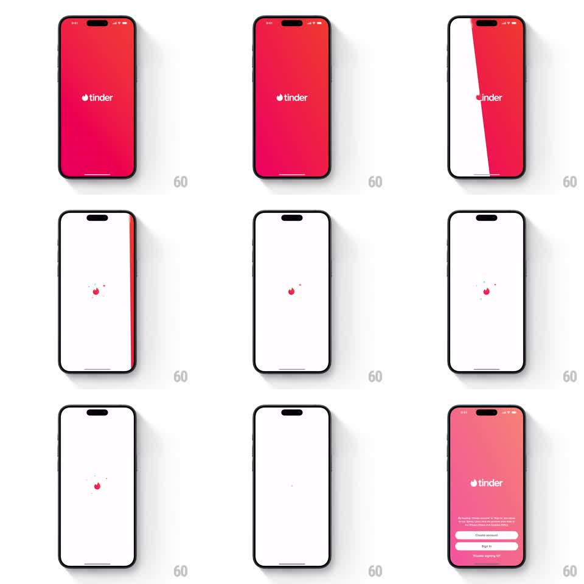

Media
Frame-by-frame

Rebuild this animation 1:1: Tinder's launch splash - the red brand screen sweeps away on a diagonal wipe, leaving a white screen where the flame mark flickers before the auth screen fades in.

Rebuild this animation 1:1: Tinder's launch splash - the red brand screen sweeps away on a diagonal wipe, leaving a white screen where the flame mark flickers before the auth screen fades in. ## Integration Integration: stack-agnostic spec - springs given as stiffness/damping, timed motions as duration + curve; map every value to your framework and animation library of choice. ## Scene Full-red launch screen with the centered white wordmark, transitioning to a minimal white interstitial with the flame glyph, and finally the pink gradient sign-in screen with Create account and Sign in buttons. ## Motion spec Pattern: diagonal brand wipe, ~1.2s. - The red screen holds (~400ms), then a diagonal boundary sweeps from top-left to bottom-right (450ms, ease-in-out): red exits one side, white enters the other, the boundary tilted ~15deg from vertical. - The wordmark exits with the red block, clipped by the wipe boundary. - On white, the flame glyph pops in small (scale 0.6 to 1, spring stiffness 350 damping 15) with two spark pips orbiting out of it, then flickers with a +-4% scale shimmer (~150ms cycle). - The white interstitial crossfades to the pink auth screen (350ms), wordmark and buttons fading up in a 80ms stagger. ## Calibration - The wipe boundary is a hard edge with a ~4px motion blur - a soft gradient wipe loses the energy. - The flame's shimmer is tiny and fast; slow pulsing reads as a loader. ## Reduced motion Red crossfades to white to auth screen, 300ms each. ## Don't miss - The wordmark is clipped by the wipe, not faded - it must feel like the red block carries it away. - The interstitial beat is short (~600ms); lingering there reads as a hang.